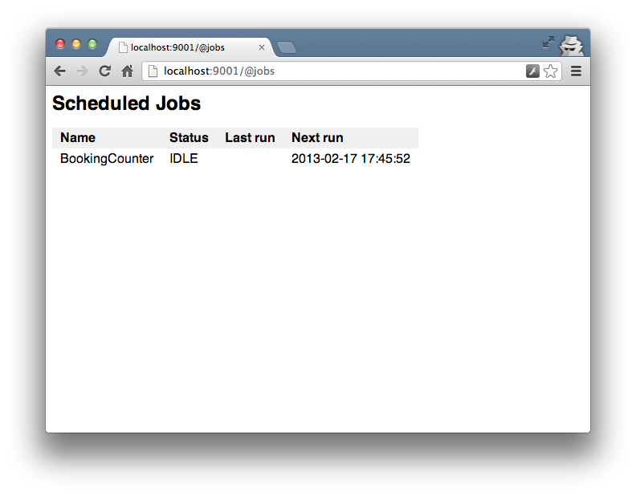

The Revel Jobs module
enables performing tasks asynchronously, outside of the request flow.
A job is either:
- Recurring, e.g. generating a daily report
- One-off, e.g. sending emails, updating a ledger, or creating a cache
Config
The Jobs module
is optional not enabled by default.
To activate add module.jobs to the app.conf file:
module.jobs = github.com/revel/modules/jobs
Additionally, in order to access the job monitoring page, you will need to add the module’s routes to your app’s conf/routes:
module:jobs
Options
There are some configuration settings that place some limitations job and its run, explained below with default values:
jobs.pool = 10- The number of jobs allowed to run simultaneously/concurrentlyjobs.selfconcurrent = false- Allow a job to run only if previous instances are donejobs.acceptproxyaddress = false- AcceptX-Forwarded-Forheader value (which is spoofable) to allow or deny status page access
Implementing Jobs
To create a Job, implement the cron.Job interface. The
Job interface has the following signature:
type Job interface {
Run()
}For example:
type MyJob struct {}
func (j MyJob) Run() {
// Do something
}Startup Jobs
To run a task on application startup, use
revel.OnAppStart() to register a function.
Revel runs these tasks serially, before starting the server. Note that this
functionality does not actually use the jobs module, but it can be used to
submit a job for execution that doesn’t block server startup.
func init() {
revel.OnAppStart(func() { jobs.Now(populateCache{}) })
}Recurring Jobs
Jobs may be scheduled to run on any schedule. There are two options for expressing the schedule:
- A cron specification
- A fixed interval
Revel uses the cron library to parse the
schedule and run the jobs. The library provides a detailed description of the format accepted.
It’s recommended that Jobs are registered using the
revel.OnAppStart() hook, but they may be
registered any time after OnAppStart.
Here are some examples:
import (
"time"
"github.com/revel/revel"
"github.com/revel/modules/jobs/app/jobs"
)
type ReminderEmails struct {
// Filtered
}
func (e ReminderEmails) Run() {
// Queries the DB
// Sends some email
}
func init() {
revel.OnAppStart(func() {
jobs.Schedule("0 0 0 * * ?", ReminderEmails{})
jobs.Schedule("@midnight", ReminderEmails{})
jobs.Schedule("@every 24h", ReminderEmails{})
jobs.Every(24 * time.Hour, ReminderEmails{})
})
}Named Schedules
You can define cron schedules in your app’s app.conf and reference them anywhere for easy reuse.
Simply define your named cron schedule:
cron.workhours_15m = 0 */15 9-17 ? * MON-FRI
Then, reference it anywhere you would have used a cron spec.
func init() {
revel.OnAppStart(func() {
jobs.Schedule("cron.workhours_15m", ReminderEmails{})
})
}One-off Jobs
The jobs module allows you to schedule a job to be run once. You can control how long to wait before the job runs.
type AppController struct { *revel.Controller }
func (c AppController) Method() revel.Result {
// Handle the request.
...
// Send them email asynchronously, right now.
jobs.Now(SendConfirmationEmail{})
// Or, send them email asynchronously after a minute.
jobs.In(time.Minute, SendConfirmationEmail{})
}Registering Job Functions
It is possible to register any func() as a job by wrapping it in the jobs.Func type.
func sendReminderEmails() {
// Query the DB
// Send some email
}
func init() {
revel.OnAppStart(func() {
jobs.Schedule("@midnight", jobs.Func(sendReminderEmails))
})
}Job Status
The jobs module provides a status page (/@jobs url) that shows:
- a list of the scheduled jobs
- the current status (IDLE or RUNNING)
- the previous and next run times

Constrained Pool Size
It’s possible to configure the job module to limit the number of jobs that are allowed to run at the same time. This allows the developer to restrict the resources that could be potentially in use by asynchronous jobs – typically interactive responsiveness is valued above asynchronous processing. When a pool is full of running jobs, new jobs block to wait for running jobs to complete.
Implementation Note: The implementation blocks on a channel receive, which is implemented to be FIFO for waiting goroutines (but not specified/required to be so). See here for discussion.
Future areas for development
- Allow access to the job status page with HTTP Basic Authentication credentials
- Allow administrators to run scheduled jobs interactively from the status page
- Provide more visibility into the job runner, e.g. the pool size, the job queue length, etc.